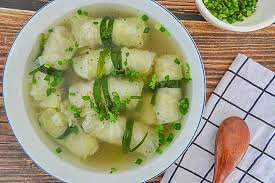

Bắp cải cuốn thịt (Summer Cabbage Rolls)

Description
A recipe for when times were simpler. Perfect
for if you want a heartwarming meal for your
family, or even if you just want to be reminded
that life is actually nothing before this humble
bowl of soup.
Ingredients
- Minced pork
- Half a carrot
- Half an onion
- Scallions
- A scoop of rice
- Soy sauce
- Vinegar
- Egg
- Napa cabbage
- Enoki mushrooms
- Chicken bouillon
Steps
- Remove cabbage stem, peel off individual leaves.
- Blanch the cabbage leaves until pliable.
- Finely dice the rest of the vegetables.
- Mix in all the filling ingredients.
- Rinse to cool down the cabbage.
- Put some filling and a stalk of enoki on the stem
side of the leaves. Roll it up and tuck in the sides.
- Places the rolls in a pot and cover with water/stock.
- Season and bring to a boil, cooking until filling is done.
Back to Home